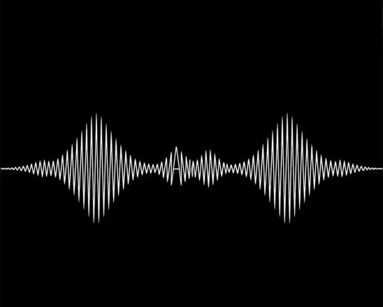
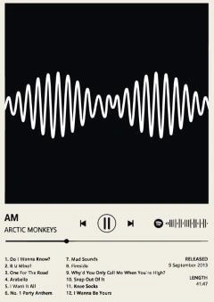
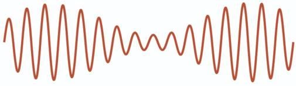
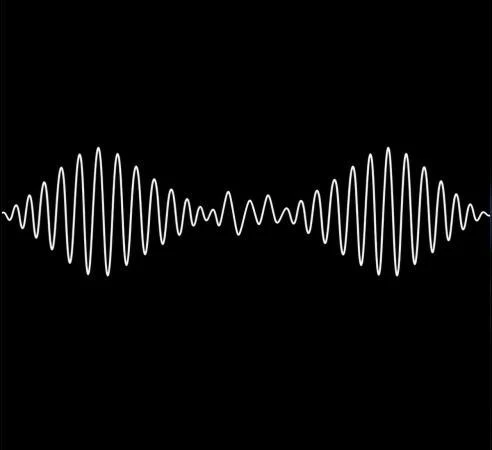

Final result · Unofficial class study · Select artwork for full size
Composition
First → Second → Final
The initial prompt established the mood. The second made the waveform’s placement and proportions more specific; reference-led refinement then shaped the curves used in the final cover.
01 / First resultBroad mood and a central white signal. Several dense peaks fill the horizontal axis.
First prompt
Create an original square album-cover image of a white central graphic single amplitude modulation radio wave form stretched across a black background. Make it minimal, nocturnal, tense, and hypnotic. No text, border, or mockup.
From the process PDF, page 1.

02 / Second resultThe number of peaks and oscillations improved; the curved arc and center shape still needed refinement.
Prompt 2 · excerpt
Priority: centered placement, narrow vertical scale, and generous black space. No text, border, or mockup.
From the process PDF, page 2.
Read the complete second prompt +
Create one original square album-cover artwork, without lettering. Show one thin, continuous white oscillating amplitude modulation (AM) radio waveform on a flat black background. The radio waveform should occupy 33% of the canvas height and 100% of the canvas width. The first peak of the radio frequency should a maximum of 25% above the horizontal center line and 25% below the horizontal centerline, and should be located 25% across the left side. The second peak of the radio waveform frequency should be a maximum of !0% above the horizontal center line, and 10% below the horizontal centerline, and the midpoint of this peak should 50% across from the left side. with a subtle detail at the central part of the wave dips and curves to spell out the letters “AM” span the radio frequency across the horizonal axis 50/50. The third peak of the radio frequency should a maximum of 25% above the horizontal center line and 25% below the horizontal centerline, and should be located 25% across the right side. Use smooth, evenly weighted curves and crisp edges, with no glow, gradient, grain, scenery, people, or objects. Priority: centered placement, narrow vertical scale, and generous black space. No text, border, or mockup.
Transcribed as written, including “!0%” in the source.
03 / Final resultSmoother curves, generous black space, and the artist name and album title at the upper left.
Final refinement direction
Inspect center, width, line weight, curves, background, and empty space.
From page 4. The PDF records refinement and typography guidance, not a separate final-generation prompt.
The two references included in the PDF, and the result of the waveform-focused revision.

Original AM referenceBlack-and-white artwork and restrained visual direction. Original artwork credited in the PDF to Matthew Cooper and Alex Turner. Source: PDF page 1.

AM radio-wave referenceThe waveform’s subtly arced envelope guided the shape; its red line and light background were not carried into the cover. Electrical Academia ↗Source: PDF page 3.

Third result / reference-led revisionThe signal becomes more open and evenly curved, establishing the artwork used before typography. Source: PDF page 3.
Reference-guided prompt
Image 1 is an image of an AM radio frequency waveform. follow the slope of this oscillating waveform pattern with its subtle arced shape. Don’t carry over Image 1s white background color or red radio frequency color.
From the process PDF, page 3.
Comparison
Before / After
First resultFinal result
↔
Before · First resultAfter · Final result
Drag across the image or move the slider to compare. With the slider focused, use the arrow keys.
The first result uses a dense central peak and several smaller side peaks. The final cover shifts emphasis to two larger side peaks, opens up the curves, and adds the artist name and album title. Both supplied images are shown in full, with black space accommodating their different proportions.
Typography
Hierarchy & negative space
Final cover treatment
A quiet corner. A clear hierarchy.
The widely spaced artist name sits above the larger “AM” title at the upper left. Keeping both in white and separate from the waveform allows the signal to remain the focus.
Typography detail extracted from the supplied PDF.
The PDF proposes Helvetica / Arial, a 26 px artist name with 5 px letter spacing, and a 64 px album title on a 1200 × 1200 canvas. These are starting values, not verified measurements of the final image.
The suggested song title at the lower left does not appear in the supplied final cover; the finished artwork is shown as provided.
Typography direction · proposed starting values
Canvas: 1200 × 1200 px. Base margin: 96 px (8%). Artist: ARCTIC MONKEYS, Helvetica / Arial, 26 px, letter spacing 5 px. Album: AM, 64 px, tracking 0. Song: Do I Wanna Know?, 26 px. Keep type white and separate from the signal. Suggested layout: artist and AM at upper left; song at lower left. Recheck if the font changes.